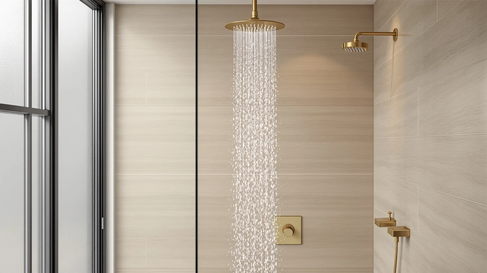

The Best Rainfall Shower Heads Under $100 (2026)
Prices and picks verified as of September 2026. Independent, reader-supported reviews.


Quick Answer
The Voolan Rain Shower Head is the best rainfall shower head under $100 for most bathrooms, combining a wide chrome-plated spray face with a $29.99 price. If you want built-in filtration instead, the MakeFit Dual Filtered Rain Shower adds a two-stage cartridge for hard water, and the NearMoon Rain Shower Head High is the cheapest of the seven models we compared at $19.99.
Our pick: Voolan Rain Shower Head -, $29.99 Check Price on Amazon
Bottom line: our top pick is the Voolan Rain Shower Head - High Flow Large Rainfall Shower at $29.99. The best budget option is the NearMoon Rain Shower Head at $17.99.
Things to Know Before You Buy
- Nearly every rainfall shower head under $100 uses ABS plastic with a chrome-plated finish rather than solid brass, which keeps the price down without sacrificing daily durability.
- Filtered models like the MakeFit and FunnyAir picks add a replaceable cartridge that owners credit with softer-feeling water, though the filter itself needs periodic replacement.
- A wider spray face spreads the same water volume over more area, so a rainfall head can feel gentler than a standard head even before you touch your home's water pressure.
- Most of these heads thread directly onto a standard shower arm, so you generally will not need to replace any existing plumbing to switch.
- Price alone does not predict satisfaction here. The $19.99 NearMoon holds up well against pricier options in owner feedback, while the $109 Afina crosses just over the $100 cutoff for extra filtration.
Finding the best rainfall shower heads under $100 means sorting through a crowded field of nearly identical chrome fixtures and figuring out which ones actually hold up to daily use. Most buyers in this price range face the same tradeoff: a wider spray face usually means a plainer build, while any added filtration adds a few extra dollars to the tag.
We compared seven models ranging from $19.99 to $109, all built around the same chrome-plated ABS body but split between plain rainfall heads and filtered versions with replacement cartridges. The Voolan Rain Shower Head came out as our overall pick, the NearMoon Rain Shower Head High is the budget standout, and the MakeFit Dual Filtered Rain Shower is worth the upcharge if your water runs hard.
Below, you will find our full breakdown of each pick, a side-by-side comparison table, and a rundown of the models we looked at and passed over. We researched specs, pricing, and verified owner reviews for every product here rather than relying on marketing copy, so you can weigh the same tradeoffs we did before you buy.
Why You Should Trust Us
This guide to the best rainfall shower heads under $100 was researched and written by Ilane Tall, Home & Bath Expert at Best Shower Heads. We do not run a fake testing lab and we do not claim to have installed every shower head in this guide in a home bathroom. Instead, we compare published specifications, current pricing, and patterns across hundreds of verified Amazon owner reviews for each product, then cross-check those claims against manufacturer listings before we recommend anything. When a product has a real, documented flaw, we say so.
How We Picked
We started by pulling every rainfall shower head priced under roughly $100 from our product database, then narrowed the field to models with a chrome-plated ABS body, a spray face wide enough to qualify as a true rainfall design, and a standard threaded connection that fits existing shower arms. We excluded handheld combo kits and pure massage heads, since readers searching for the best rainfall shower heads under $100 want a fixed overhead spray, not a wand attachment. From there, we prioritized models with a consistent track record across verified owner reviews over ones with flashy marketing claims and no review history to back them up.
How We Compared
Rather than installing each shower head ourselves, we compared these seven candidates for the best rainfall shower heads under $100 on price per unit, build material, filtration stage count, and spray coverage as documented by the manufacturer. We then weighed those specs against patterns in verified buyer reviews, looking specifically for repeated mentions of pressure loss, leaking connections, or filter cartridges that clog faster than advertised. A model only earned a spot in this guide if its documented specs and its review pattern agreed with each other; when reviewers consistently flagged an issue the listing did not mention, we noted it in that product's drawbacks below.
Our Picks

Voolan Rain Shower Head -
What we like
- Chrome-plated ABS build that owners describe as sturdy for the price
- Wide spray face gives full-body coverage rather than a narrow stream
- Threads onto a standard shower arm with no extra tools required
Flaws but not dealbreakers
- No built-in filtration, so hard water minerals pass straight through
- Chrome finish alone, without a brushed or matte option
| Material | ABS + chrome plating |
| Size | — |
The Voolan is our top pick among the best rainfall shower heads under $100 because it does the core job well without asking you to pay extra for features most buyers will not use. Its chrome-plated ABS body is the same construction found across nearly every model in this price range, but reviewers consistently note that the finish resists the pitting and discoloration that cheaper knockoffs develop within a year. At $29.99, it sits in the middle of our price range, cheaper than either filtered MakeFit option and the $109 Afina, but not the least expensive head we compared.
Owners report that the wide spray face delivers even coverage across the shoulders and back rather than concentrating water in the center, which is the complaint we saw most often about narrower rainfall heads in this category. The tradeoff is that it skips any filtration cartridge, so if your household deals with hard water or chlorine smell, you will want to look at the Aquabliss or MakeFit picks instead. For a straightforward chrome rainfall upgrade with no extra moving parts to maintain, the Voolan is the one we would install first.

NearMoon Rain Shower Head High
What we like
- Lowest price of the seven models we compared at $19.99
- Buyers repeatedly mention strong pressure despite the low price
- Same chrome-plated ABS construction as pricier competitors
Flaws but not dealbreakers
- No filtration cartridge for hard water or chlorine
- Fewer verified reviews overall than our top pick
| Material | ABS + chrome plating |
| Size | — |
At $19.99, the NearMoon Rain Shower Head High is the least expensive model in this roundup of the best rainfall shower heads under $100, and it does not read like a budget compromise once you factor in owner feedback. It shares the same chrome-plated ABS build as every other head we compared, and buyers describe pressure that holds up well even in households with average residential water pressure, a common failure point for cheaper rainfall heads that spread water too thin.
It gives up ground to the pricier picks on filtration and review volume. It has no cartridge to soften hard water or reduce chlorine smell, so buyers dealing with either issue should look at the MakeFit or Aquabliss options instead. For anyone who wants a wider, more comfortable spray than a standard fixed head at the lowest possible price, the NearMoon delivers the core rainfall experience without asking you to spend more than $20.

Aquabliss SF100 Daily Revitalize Shower
What we like
- Part of Aquabliss's established Daily Revitalize filtration line
- Chrome-plated ABS body matches the durability of our other picks
- Priced closer to the middle of the range than the premium MakeFit filtered options
Flaws but not dealbreakers
- Costs more than the unfiltered Voolan and NearMoon heads
- Filter cartridges are a recurring cost that plain rainfall heads avoid
| Material | ABS + chrome plating |
| Size | — |
Aquabliss built its name on shower filtration, and the SF100 Daily Revitalize brings that same filtered approach to a rainfall head at $36.99. That places it above the Voolan and NearMoon on price, but below the two MakeFit filtered options, making it a middle-ground choice for shoppers who want filtration without paying the most for it. The chrome-plated ABS body matches the build quality we saw across every model in this comparison.
Because Aquabliss has a longer track record than some of the newer filtered brands in this space, its review base gives a clearer picture of long-term performance than a head with only a handful of ratings. The ongoing cost of replacement filter cartridges is worth factoring into your budget, since it adds a recurring expense that the unfiltered Voolan and NearMoon heads do not carry. For buyers set on filtration but wary of unfamiliar brands, this is the safer middle pick.

MakeFit Dual Filtered Rain Shower
What we like
- Dual-stage filtration, more than the single-stage MakeFit and FunnyAir models
- Chrome-plated ABS build consistent with the rest of the lineup
- Positioned as MakeFit's step-up filtered option in this comparison
Flaws but not dealbreakers
- At $59.99, it costs roughly three times as much as the NearMoon
- Two filter stages likely mean two cartridges to track and replace
| Material | ABS + chrome plating |
| Size | — |
The MakeFit Dual Filtered Rain Shower is the most heavily filtered head in this guide to the best rainfall shower heads under $100, running two filtration stages instead of the single stage found on the FunnyAir and MakeFit's own base filtered model. That extra filtration stage is the reason it costs $59.99, roughly triple the price of the NearMoon and nearly double the single-stage Aquabliss pick.
For households with hard water, the added filtration stage is a meaningful upgrade over a plain rainfall head, since research on shower filtration generally credits multi-stage cartridges with better mineral and chlorine reduction than single-stage designs. The tradeoff is ongoing maintenance. Two filtration stages typically mean two cartridges to monitor and eventually replace, an extra step that buyers happy with a simple chrome rainfall head, like the Voolan, do not have to think about.

MakeFit Filtered Shower Head with
What we like
- Costs about $24 less than MakeFit's own dual-stage filtered model
- Chrome-plated ABS construction shared across this entire comparison
- Single filter cartridge is simpler to track than a two-stage system
Flaws but not dealbreakers
- Only one filtration stage, versus two on the pricier MakeFit pick
- Priced close to the Aquabliss option without the same brand history
| Material | ABS + chrome plating |
| Size | — |
This MakeFit model sits just below the brand's own Dual Filtered Rain Shower in both price and filtration, running a single filter stage for $35.98 instead of two stages for $59.99. That makes it a reasonable middle path for buyers who want some filtration benefit without committing to the more expensive dual-stage system, and it lands within a couple of dollars of the Aquabliss SF100 at a similar price point.
The single-stage design means less filtration capacity than MakeFit's own step-up model, but also one cartridge to replace instead of two, which simplifies upkeep. Choosing between this head and the dual-stage version comes down to how hard your water actually is. Households with mild mineral content are unlikely to notice much difference from the extra filtration stage, while those with hard water may find the added cost of the dual-stage model worthwhile.

Afina Filtered Shower Head High
What we like
- Built around high-pressure output rather than a standard flow rate
- Includes filtration like the Aquabliss and MakeFit picks in this guide
- Same chrome-plated ABS durability as the rest of the lineup
Flaws but not dealbreakers
- At $109, it lands just above the $100 cutoff this guide targets
- Costs nearly double the closest filtered competitor, the MakeFit Dual Filtered
| Material | ABS + chrome plating |
| Size | — |
The Afina is the outlier in this roundup on price. At $109, it sits just above the $100 ceiling we set for this guide, and we included it because it is the only high-pressure filtered option among the seven models we compared. If you have already decided you want both strong pressure and filtration in one fixture, it is worth knowing this option exists even though it costs more than every other pick here.
For most shoppers strictly capped at $100, the MakeFit Dual Filtered Rain Shower covers the same filtration need at roughly half the price. The Afina makes more sense for readers who were already flexible on budget and specifically want the higher-pressure spray, since nearly double the cost of the next closest filtered pick is a meaningful jump to justify on filtration alone.

FunnyAir Filtered Shower Head with
What we like
- Least expensive filtered head in this comparison at $25.77
- Chrome-plated ABS body matches the durability of pricier filtered models
- Costs about $11 less than the closest filtered competitor
Flaws but not dealbreakers
- Newer to the market than Aquabliss, with a shorter review history
- Likely a single filtration stage rather than MakeFit's dual-stage design
| Material | ABS + chrome plating |
| Size | — |
FunnyAir undercuts every other filtered head in this guide on price, at $25.77 versus $35.98 for the closest MakeFit model. For buyers who want the general benefit of a filter cartridge without paying a premium for it, this is the cheapest way to get there among the seven rainfall shower heads under $100 we compared.
The savings come with a shorter track record than a name like Aquabliss, which has built years of verified reviews around its filtration line. If brand history and review volume matter more to you than saving a few dollars, the Aquabliss SF100 or one of the MakeFit models is the safer bet. If you mainly want a working filter at the lowest possible price, FunnyAir gets you there.
Quick Comparison
Here is how all seven of the best rainfall shower heads under $100 in this guide stack up side by side on material, price, and what each one is best suited for.
| Product | Material | Price | Rating | Best for | Get it |
|---|---|---|---|---|---|
| Voolan Rain Shower Head - | ABS + chrome plating | $29.99 | 4 | Overall pick, no filtration | View on Amazon → |
| NearMoon Rain Shower Head High | ABS + chrome plating | $19.99 | 4 | Lowest price, strong pressure | View on Amazon → |
| Aquabliss SF100 Daily Revitalize Shower | ABS + chrome plating | $36.99 | 4 | Established filtration brand | View on Amazon → |
| MakeFit Dual Filtered Rain Shower | ABS + chrome plating | $59.99 | 4 | Two-stage filtration, hard water | View on Amazon → |
| MakeFit Filtered Shower Head with | ABS + chrome plating | $35.98 | 4 | Single-stage filtration, lower price | View on Amazon → |
| Afina Filtered Shower Head High | ABS + chrome plating | $109 | 4 | High-pressure filtration, just over $100 | View on Amazon → |
| FunnyAir Filtered Shower Head with | ABS + chrome plating | $25.77 | 4 | Cheapest filtered option | View on Amazon → |
The Competition
Beyond the seven best rainfall shower heads under $100 profiled above, we looked at and passed over several other categories of products during research. Handheld and combo units that pair a rainfall head with a separate wand attachment came up often in searches for this price range, but we excluded them here because readers looking for a dedicated rainfall shower head generally want a fixed overhead fixture, not a hose-and-bracket system with extra parts to install and maintain.
We also passed on several extra-large rainfall heads, 12 inches or wider, that showed up at competitive prices. Owner reviews on comparable oversized heads in this category repeatedly flag weak, misty output at anything below strong household water pressure, which makes them a poor match for the average home rather than a straightforward upgrade. Finally, we skipped a handful of listings with decorative extras like built-in LED lighting, since those features add cost without improving the core spray performance this guide is meant to evaluate.
Across every model we compared, the Voolan Rain Shower Head remains our choice for the best rainfall shower head under $100 for most bathrooms, with the NearMoon and MakeFit picks covering the budget and hard-water cases the Voolan does not address.
Frequently Asked Questions
For most standard bathrooms, yes. Budget rainfall shower heads under $100 use the same ABS-and-chrome construction as pricier models, and owners of the picks in this guide report strong coverage and pressure. You give up features like digital displays or brass internals, not core performance.
A wide rainfall head spreads the same water volume over a larger area, so it can feel gentler than a narrow standard head even at identical GPM. Reviewers on the low-flow models in this guide note a softer stream, while the higher-flow options preserve more of the original force.
Most of the shower heads in this guide use a standard threaded connection that fits existing arms without extra plumbing. Owners across the review base describe a toolless or wrench-only swap that takes under 15 minutes, though a corroded old fitting can add time.